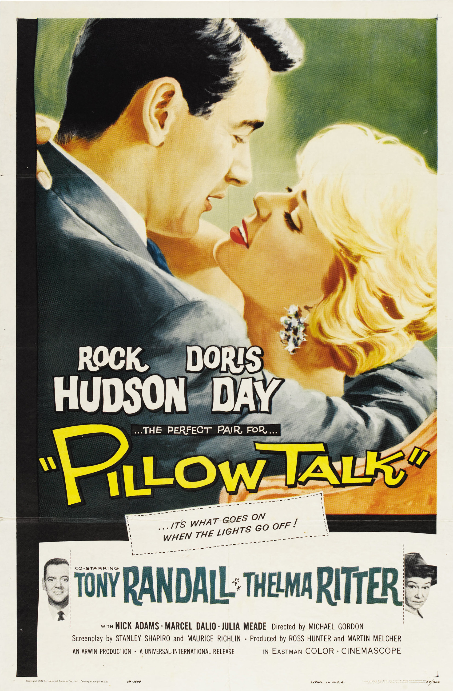

Pillow Talk
32nd Academy Awards
(Oscars 1960)
5 Nominations, 1 Award
| Nominations | ||
|---|---|---|
| Category | Nominees | Result |
| Actress | Doris Day | Nominated |
| Actress in a Supporting Role | Thelma Ritter | Nominated |
| Writing (Story and Screenplay--written directly for the screen) | Clarence Greene, Maurice Richlin, Russell Rouse, and Stanley Shapiro | Won |
| Art Direction (Color) | Richard H. Riedel, Ruby R. Levitt, and Russell A. Gausman | Nominated |
| Music (Music Score of a Dramatic or Comedy Picture) | Frank DeVol | Nominated |